| ||||||||||||||
|
|
||
Now, we consider the case when 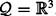. In , the GVD is two-dimensional and therefore reduces the motion planning problem by a single dimension. We use figure 5.9(d) to show this. Imagine extruding the one-dimensional curves in figure 5.9(d) into two-dimensional surfaces in three dimensions; so the one-dimensional curves in figure 5.9(d) become cross sections of two-dimensional sheets. This makes sense because we have a three-dimensional space with one constraint resulting in a two-dimensional subspace. The preimage theorem confirms that the GVD actually comprises two-dimensional manifolds; the dimension of (di − dj)−1(0) is two because 3 − 1 = 2.
Just as two planes in generically intersect on a line, two two-equidistant faces intersect and form a one-dimensional manifold. The union of these one-dimensional structures is termed the generalized Voronoi graph (GVG) [105,106]. See figures 5.15 and 5.16 for examples of the GVG in three dimensions.
The GVG edges in are the set of points equidistant to three obstacles such that the three obstacles are closest and have distinct gradients. Starting with triple equidistance, we define 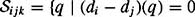 and (di − dk)(q) = 0}.Wedo not need the additional (dj − dk)(q) = 0 constraint because di (q) = dj (q) and di (q) = dk(q) imply that dj (q) = dk(q). Just like before, we are interested in a subset of 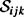 where the gradients are distinct, and thus
Note that the transitivity of di (q) = dj (q) and dj (q) = dk(q) impliesthat di (q) = dk(q), but it does not ensure that 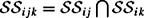 because we require all three gradients to be distinct. To determine the dimension of the GVG edge, we look at 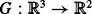
where
whose preimage G−1 (0) is the set of points equidistant to three obstacles 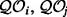, and 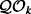 when the differential DG(q) is surjective, i.e., does not lose rank. The differential DG(q) can lose rank when either row of DG(q) is zero or the first row is a scalar multiple of the second row in DG(q). We already know by definition that ∇di (q) ≠ ∇dj (q) and ∇di (q) ≠ ∇dk(q), so all we need to show is that ∇(di − dj )(q) ≠ α∇(di − dk) for all 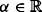. In other words, we must show that the two rows of DG(q) do not depend upon each other.
We demonstrate this by making a "reasonable" assumption based on transversality, a property of how sets intersect. Let's start with a simple example of two intersecting lines in the plane. These lines may intersect in one of three ways: not at all (parallel), at a point (generic), and on a line (overlap) (figure 5.17). The parallel and overlap cases can be viewed as "unstable" because if either line were perturbed a little bit, the intersection would change dimension. The point intersection can be viewed as stable in that if either of the lines were perturbed, a point-type intersection is preserved. We call stable intersections transversal and nonstable intersections nontransversal. Two lines in three dimensions can never intersect transversally because a generic perturbation can break the intersection to no intersection. In three dimensions, two planes transversally intersect on a line and a plane and a line transversally intersect at a point.
In actuality, transversality is a local property of manifolds. For example, we say that two manifolds may intersect transversally at a point. Since transversality is a local property, we look at the intersection of the tangent spaces, not of the manifolds themselves. If intersection of the tangent spaces is transversal at a point, then the manifolds intersect transversally at that point (figure 5.18). We know from the preimage theorem that the tangent space TqG−1(0) is given by the set of vectors 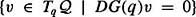. We assume that surjective equidistant sheets intersect transversally at all points, i.e., Tq(di − dj)−1(0) and Tq(di − dk)−1(0) intersect transversally for all 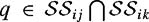. If they do not intersect transversally, then after a small perturbation of one of the manifolds, the intersection of the two manifolds will be transversal. In any event, the transversal intersection means that for all 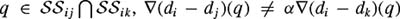 for all 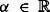. Therefore, DG(q) has full rank and we can use the preimage theorem to assure us that 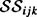 is indeed a one-dimensional manifold. The GVG in is then the union of 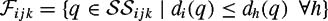 i.e.,
| (5.3) | 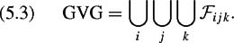
|
In higher dimensions, one can define more equidistant sheets and intersect them to form a GVG. In , the GVG is the set of points equidistant to m obstacles and has dimension one. In contrast, in the GVD is the set of points equidistant to two obstacles and has dimension m − 1. Sometimes, an m − k-dimensional object lying in an m -dimensional space is said to have codimension k; therefore the GVD has codimension one, regardless of the space in which it is defined. When m = 2, the GVG and the GVD coincide. For naming convention refer to the GVG as the "one-dimensional" roadmap structure and thus in the plane we will sometimes call it the planar-GVG. See table 5.2.
|
Structure |
Dimension |
Codimension |
Equidistance |
Symbol |
|---|---|---|---|---|
|
GVD |
m − 1 |
1 |
2 |
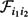 |
|
GVG |
1 |
m − 1 |
m |
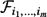 |
Now, let's more formally define transversality. Let Mint be the intersection of two submanifolds M1 and M2 of M. The intersection is said to be transversal if Tx M1 + Tx M2 = Tx M for all points x ∊ Mint. Therefore, if M1 and M2 are finitely dimensional, transversality implies that codim(Tx M1 ∩ Tx M2) = codim(Tx M1) + codim(Tx M2) for all x ∊ Mint. For example, two lines in the plane each have codimension one and their intersection has codimension two, which means a zero-dimensional intersection which is a point. Two two-dimensional planes in 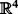 have codimension two and intersect at a point, which has codimension four in . The transversality assumption is a generalization of the general position assumption that is commonly assumed in the computational geometry literature.
Alas, unlike the case in figure 5.15, the GVG is typically not connected and thus is not a roadmap, as can be seen in the example shown in figure 5.19. Here, there is an outer GVG network of one-dimensional manifolds associated with the rectangular enclosure and there is an inner GVG edge associated with the interior box. We term this latter edge a GVG cycle which is a GVG edge that is homeomorphic to S1.In this section, we first explain why the GVG is not connected and then introduce some techniques that can be used to connect disconnected components of the GVG. For a thorough explanation of these procedures, see [106].
The lack of connectivity of the GVG is not the fault of the GVG definition, but rather a consequence of using deformation retractions: in general, there cannot be a one-dimensional deformation retract of a punctured three-or-more-dimensional space. In other words, whereas in the plane we were able to retract the free space onto the GVD with the H mapping (section 5.2.3), in a punctured there is no continuous function that maps the free space onto a one-dimensional subset that is homotopic to the identity map [63]. The latter condition means that there is no map that "smoothly deforms" the free space onto the one-dimensional structure.
We address the lack of connectivity of the one-dimensional structure by first looking at a connected two-dimensional structure, and then defining one-dimensional structures on the two-dimensional structure to form a roadmap. In the two-dimensional GVD is connected. In fact, the GVD is a two-dimensional deformation retract of the three-dimensional space. We can exploit this connectivity of the GVD to "patch together" the GVG. Notice that the GVG edges lie on the boundary of the GVD sheets where adjacent GVD sheets intersect. In other words, 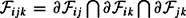. Therefore, if, and this is a big if, the boundaries of all two-equidistant sheets were connected, then the resulting GVG would be connected because the GVD is connected. This is the case in figure 5.15 where all two-equidistant faces have connected boundaries. This is not the case in figure 5.19 with the two-equidistant sheet associated with the floor and ceiling; it has a hole in the middle. The boundary of this hole is the GVG edge defined by the floor, ceiling, and interior box. So, our goal now is to connect the boundaries of each of the two-equidistant sheets.
To connect the GVG edges (the boundaries of the two-equidistant faces), we define additional structures called higher-order GVG edges. A second-order GVG edge 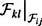 is the set of points where 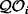 and 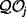 are the closest pair of equidistant obstacles and 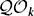 and are the second-closest, i.e.,
The first line of equation (5.4) establishes the equidistance relationships: a pair of closest obstacles and a pair of second-closest obstacles. The second line of equation (5.4) ensures that the gradients are distinct, a condition necessary for the preimage theorem to assert that 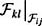 is a one-dimensional manifold.
The second-order GVG edges are essentially planar-GVG edges but defined on two-equidistant faces. The preimage theorem guarantees that these edges are onedimensional and terminate (and intersect) at second-order meet points, denoted as 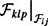 (figure 5.20).
We call the union of the GVG and second-order GVG the hierarchical generalized Voronoi graph (HGVG), which by itself, as can be seen in figure 5.20, is not connected. However, there is a clue in the second-order GVG that directs the planner to "look for" a separate GVG-connected component. Notice in figure 5.20 that there is a network of second-order GVG edges that form a closed-loop path, which we term a period, that has a common second-closest obstacle - the box in the middle of the room.
Once a period is detected, the planner can trace a path that maintains two-way equidistance between 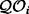 and 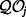 while decreasing the distance to 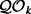. Such a path follows, in general, the negative gradient of dk because we start with dk(q) > di (q) = dj (q), and decreasing dk yields a configuration where dk(q) = di (q) = dj (q). However, in order to maintain double equidistance between and , the negative gradient must be projected onto the two-equidistant face. Hence, the path is 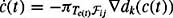 where the π operator is projection. Following the projected negated gradient 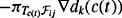 traces a path that terminates on a GVG edge where di (q) = dj (q) = dk(q)as long as does not vanish. If 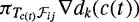 goes to zero, then no such GVG edge exists in which case the robot returns to the second-order period to continue exploration.
This is just the beginning of what is required for connectivity. Ensuring connectivity can be quite tedious and challenging. See [106] for details of connectivity of the HGVG. The HGVG is a type of retract-like structure because it is not a retract, but bears similarities to one.
Exploration with the HGVG shares the same key steps as GVD exploration: (1) access the HGVG; (2) explicitly "trace" the HGVG edges; (3) determine the location of nodes; (4) explore the branches emanating from the nodes; and (5) determine when to terminate the tracing procedure. Accessing the GVG (and hence the HGVG) is still gradient ascent, but now it is a sequence of gradient ascent operations. The robot moves away from the closest obstacle until it is two-way equidistant. Then, while maintaining two-way equidistance, the robot increases distance until it is three-way equidistant.
Once the robot accesses the GVG, it must incrementally trace GVG edges. Instead of using curve tracing techniques that have discrete steps and discrete corrections, we now derive a control law that smoothly traces the roots of the expression
where di is the distance to an object , and thus if (d1 − d2)(q) = (d1 − d3)(q) = 0, the robot is equidistant to three obstacles and on the GVG. (Likewise, when 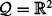, G(q) = (d1 − d2)(q), which is zero when the robot is equidistant to two obstacles, a point on the GVD in the plane).
At a point q in the neighborhood of the interior of a GVG edge, the robot steps in the direction
where
α and β are scalar gains,
ν ∊ Null( DG(q)), the null space of DG(q),
( DG(q))† is the Penrose pseudoinverse of ∇G(q), i.e.,
Note that when q is on the GVG, G(q) = 0 and thus 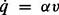 = αν where ν ∊ Null(∇G(q)) and is simply the tangent direction of the GVG, as prescribed by the preimage theorem. Since ∇G(q) is a function of distance gradients, the planner can compute ∇G(q) solely from range sensor information. This can be done by looking at the n -closest points on the n -closest obstacles, fitting a codimension one plane through these points, and deriving the line orthogonal to this plane. The tangent vector then points along this line.[4]
When q is not on the GVG, then (∇G(q))†G(q) ≠ 0. This term corresponds to the "correction" step which accommodates for curvature in the GVG. Again, this term can easily be determined from sensor data. Whereas the α determines how quickly the robot moves along the GVG, the β represents how aggressively the robot moves back to the GVG, as if α and β were spring constants.
To determine stability of the control law, let 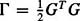 measure the distance a point q is away from the GVG. We look at the first derivative Γ.
The function Γ is a Lyapunov function [202] for the controller in equation (5.5). Think of a Lyapunov function as an "error function" whose minimal value is zero. Since ( DG(q) DGT (q)) is invertible in a neighborhood of the GVG [108], if β< 0, then is negative. This assures that Γ decreases to zero, meaning that equation (5.5) directs the robot onto the GVG.
While generating the GVG, the robot must precisely locate itself on the meet points. A meet point homing algorithm can be used to stably converge onto the meet point location [109]. The control law for homing onto a meet point is similar to the one for generating GVG edges, except G is now defined as
In the planar case, 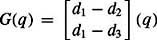. Since it has already been shown to be stable, we use the controller in 5.5 to determine the the path for the robot to home onto a meet point. Since Null(DG(q)) = 0, the controller is 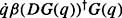. Geometrically, this means that when the robot is in the vicinity of the meet point, it draws a sphere through the four closest points on the four closest obstacles (in the planar case, it is a circle through the three closest points). The velocity vector points toward the center of this sphere.
[4]Note that there are two choices for this vector, but the planner chooses the direction that directs the robot to continue in the "same" direction.
|
|
||
|